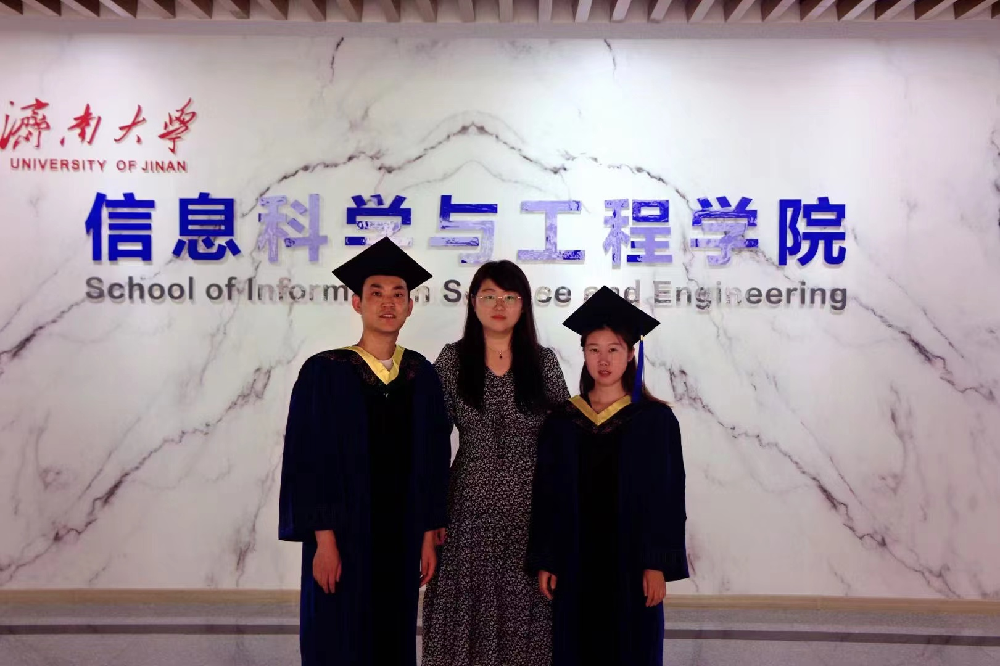
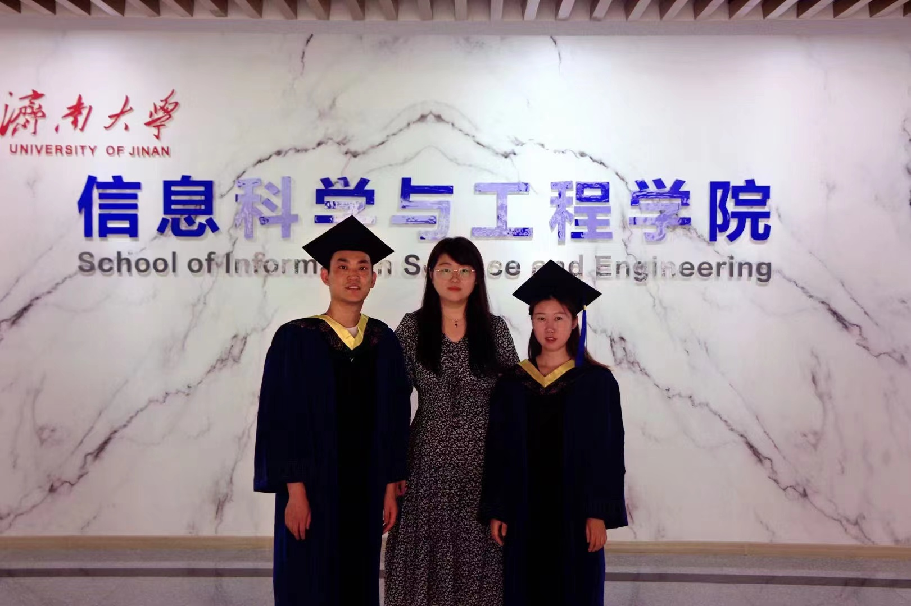

出版成果
[1] Qingjie Wang, Hui Zhao, Aidi Liu, Sijie Niu, Xizhan Gao, Xiju Zong, Lixiang Li.“An Improved Fixed-time Stability Theorem and its Application to the Synchronization of Stochastic Impulsive Neural Network.” Neural Processing Letters, 2023.https://doi.org/10.1007/s11063-023-11268-3
[2] Zijian Wang, Hui Zhao, Mingwen Zheng, Sijie Niu, Xi zhan Gao, Lixiang Li. “A novel time series prediction method based on pooling compressed sensing echo state network and its application in stock market.” Neural Networks, 2023, 164: 216-227.https://doi.org/10.1016/j.neunet.2023.04.031
[3] Qingjie Wang, Hui Zhao., Aidi Liu, Lixiang Li, Sijie Niu, Chuan Chen. “Predefined-time Synchronization of Stochastic Memristor-based Bidirectional Associative Memory Neural Networks with Time-varying Delays.” IEEE Transactions on Cognitive and Developmental Systems, 2022, 14:1584-1593.
[4] Aidi Liu, Hui Zhao, Qingjie Wang, Sijie Niu, Xizhan Gao, Chuan Chen, Lixiang Li. “A New Predefined-Time Stability Theorem and its Application in the Synchronization of Memristive Complex-Valued BAM Neural Networks.” Neural Networks, 2022, 153:152-163.https://doi.org/10.1016/j.neunet.2022.05.031
[5] Aidi Liu, Hui Zhao, Qingjie Wang, Mingwen Zheng, Chuan Chen, Sijie Niu, Lixiang Li. “Predefined-time stability/synchronization of coupled memristive neural networks with multi-links and application in secure communication.” Frontiers in Neurorobotics, 2021, 15:783809. https://doi.org/10.3389/fnbot.2021.783809
[6] Hui Zhao, Mingwen Zheng.“Finite-Time Synchronization of Coupled Memrisive Neural Network via Robust Control.” IEEE ACCESS, 2019, 7: 31820 – 31831.
[7] Hui Zhao, Mingwen Zheng, Shudong Li, Weiping Wang.“New results on finite-time parameter identification and synchronization of uncertain complex dynamical networks with perturbation .” Modern Physics Letters B, 2018, 32: 1850112.https://doi.org/10.1142/S0217984918501129
[8] Hui Zhao, Lixiang Li, Haipeng Peng, Jinghua Xiao, Yixian Yang, Mingwen Zheng.“Fixed-time synchronization of multi-links complex network .” Modern Physics Letters B, 2017, 31：1750008.https://doi.org/10.1142/S0217984917500087
[9] Hui Zhao, Lixiang Li, Haipeng Peng, Juergen Kurths, Jinghua Xiao, Yixian Yang, Ang Li.“A new approach of analyzing time-varying dynamical equation via an optimal principle.” Modern Physics Letters B, 2017, 31：1750084. https://doi.org/10.1142/S0217984917500841
[10] Hui Zhao, Lixiang Li, Haipeng Peng, Jinghua Xiao, Yixian Yang, Mingwen Zheng, Shudong Li.“Finite-time synchronization for multi-link complex networks via discontinuous control .” Optik - International Journal for Light and Electron Optics, 2017,138:440–454.https://doi.org/10.1016/j.ijleo.2017.03.098
[11] Hui Zhao, Lixiang Li, Haipeng Peng, Juergen Kurths, Jinghua Xiao, Yixian Yang.“Finite-time robust synchronization of memrisive neural network with perturbation .” Neural Processing Letters, 2017(2018):1-25. https://doi.org/10.1007/s11063-017-9664-9


 
